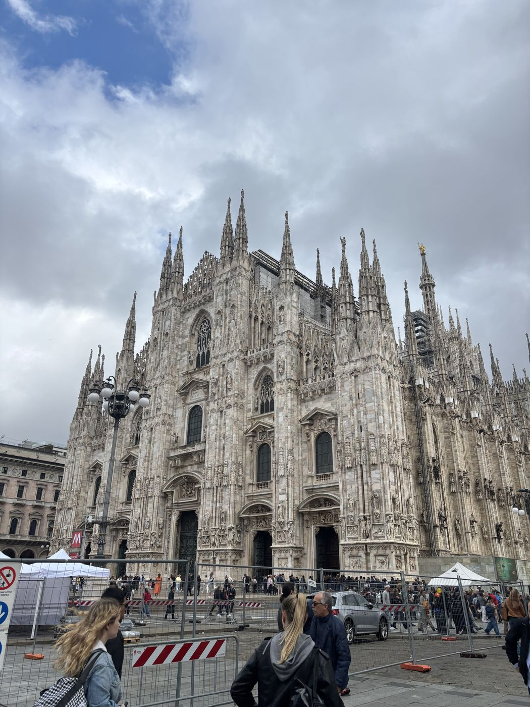

This summer I did research in London through UF's Summer Undergraduate International Research Program (SUIRP). I worked in Prof. Firat Güder's lab in the Bioengineering department at Imperial College London, building a diagnostic test that heats itself with no power.
I was in the lab during the week and traveled on weekends. Each week below has a lab update, where I went that weekend, and photos.
 The technical version
Passive Thermal and Fluid Control for an Infrastructure-Free Diagnostic Cassette
Read the full project write-up →
The technical version
Passive Thermal and Fluid Control for an Infrastructure-Free Diagnostic Cassette
Read the full project write-up →
where the weekends went
8 weeks, 8 weekends
14 – 21 June
Getting settled
Flew overnight from Orlando and landed at Heathrow Sunday morning. Took the Tube to my flat in west London and slept most of the afternoon. That night I walked to South Kensington to find the lab so I wouldn't get lost Monday.

In the lab
Starting the project
Monday and Tuesday were inductions: building access, chemical safety, printer training. Then I met with Prof. Güder about the project. He wanted a single-use cassette that keeps a DNA amplification reaction at 37–42 °C for long enough to run, with no electricity, and then moves the sample onto a lateral flow test strip by itself.
My plan was a two-part heater. Magnesium chloride gets hot when you add water, but it dumps all the heat at once. A ring of phase-change material (PCM) around it would absorb that spike and release it slowly.
By Friday I had a rough test chamber and a thermal camera. The chamber got to about 44 °C in a couple minutes, which I was happy about until I checked the liquid in the well. It was a lot colder. The camera was reading the wall, and the reaction only cares about the liquid.

Wall temp ≠ reaction temp. Need a thermocouple in the well.
Out and about
Museums at lunch
The Science Museum, the Natural History Museum, and the V&A are all a few minutes from the lab and free, so I went to them on lunch breaks. Hyde Park is about ten minutes away. The sun doesn't set until after 9 in June, so I had a lot of daylight after work.
I stayed in London the first weekend to figure things out. I found a grocery store, learned the Tube, and walked from the lab through Hyde Park and Green Park to Buckingham Palace and then down to the river. You can tap a normal bank card on any bus or train, so I never got an Oyster card.
22 – 28 June
Printing a lot of cassettes
In the lab
Designing the cassette
Most of this week was CAD. I designed the cassette in Fusion 360 with the heating chamber as a ring around the sample well, so the heat comes in evenly from every side and doesn't have far to go. The lateral flow strip sits under the well, with a membrane in between that controls when the sample gets released.
I kept the printers busy all week. Every version changed the wall thickness or chamber volume, since the amount of salt and PCM has to match how much liquid it's heating. By Friday I had a design I liked and a drawer full of ones I didn't.

Out and about
Milan
First trip out of the country. Got a cheap flight Friday night and was in Milan by midnight. Saturday morning I went up on the roof of the Duomo, where you can walk around between the spires. Then I walked through the Galleria and spent the afternoon in Brera.
That evening I went to the Navigli canals for aperitivo, where you get food with your drink. I tried to get Last Supper tickets, but they sell out weeks ahead. The trip was quick and cheap, so I started planning one for almost every weekend after that.

29 June – 5 July
Fixing my measurement
In the lab
Building a test rig
After the thermal camera problem, I built a test rig. I sealed a thermocouple into the sample well so every run measures the liquid the reaction would actually be in, and logged it to a laptop.
I also wrote a Python script that takes each temperature trace and gives me one number: how many minutes the well stays between 37 and 42 °C. That made every run easy to compare. My first version was slow enough that the code was holding things up more than the hardware, so I rewrote it on Wednesday.

Out and about
Cambridge and a climbing gym
Saturday I took the train to Cambridge, which is under an hour from King's Cross. I walked along the Backs behind the colleges, went into King's College Chapel, and watched people crash punts into each other on the river.
Sunday I found a bouldering gym in a long arched hall. I ended up going most weeks for the rest of the summer. It was a good way to meet people outside the lab and gave me something to do on weeknights.

Cambridge!
King's College Chapel, the Backs, and a lot of punting crashes. None of them were me.
1st
6 – 12 July
Fishing, 49 runs, and Paris
Out and about
Fishing in the Channel
I took Monday off and went out on a fishing charter from the south coast with a group. The white cliffs were behind us all morning, and the water was a lot rougher than it looked from the harbour. We caught some mackerel, and I was one of the few people who didn't get seasick.

In the lab
Starting the sweep
This is when the main experiment started. The salt and the PCM work against each other. More MgCl2 makes the peak hotter and the window shorter. More PCM flattens the peak, but too much absorbs so much heat that the well never gets warm enough. You can't tune one without the other, so I set up a 7 × 7 grid of both amounts. That's 49 runs.
Each run took about half an hour with setup and cleanup, so I could get through several a day. By Friday I could see the general shape of the results, and one run, R09, looked really good.

Out and about
Paris
Friday after work I took the Eurostar from St Pancras. It's a little over two hours to central Paris, about the same as driving Gainesville to Orlando. Saturday we walked along the Seine, through the Tuileries, and up to Montmartre, then ended at the Eiffel Tower after dark. It sparkles for five minutes every hour on the hour.
Sunday we waited in line for Notre-Dame, which reopened at the end of 2024 after the fire. The stone was cleaned during the rebuild, so it's really bright inside. Then we took the train back Sunday night and I was in the lab Monday morning.


13 – 19 July
Finishing the sweep
In the lab
All 49 runs
This week was a lot of the same thing: weigh salt, weigh PCM, load the cassette, add water, log, clean, repeat. By Thursday all 49 runs were done and I could plot the whole grid.
I expected a big area in the middle that worked well. Instead the good results were on a thin ridge around 1800 mg PCM and 500 mg salt, and they dropped off fast on either side. I wouldn't have found that point without running the full grid. It also means the cassette is sensitive to small mistakes in how much salt goes in, which would matter if anyone tried to make these at scale.
I showed the results at group meeting Friday. The best question I got was whether the ridge is repeatable, so I added that to my list for the next few weeks.

Out and about
Bath and Stonehenge
Saturday I did a day trip west. Stonehenge was first. It's smaller than I expected, but it's still crazy that people moved those stones into place around 4,500 years ago. I spent most of the time trying to figure out how they did it.
In the afternoon we went to Bath. The whole city is built out of the same yellow stone, and the Roman Baths in the middle are still fed by a natural hot spring. I walked the Royal Crescent before the bus back to London.
Hi from Bath!
Stonehenge in the morning, Roman Baths in the afternoon. Older than anything in Florida.
1st
20 – 26 July
PVA valves
In the lab
A timer made of plastic
With the heater working, the next problem was timing. If the sample hits the test strip before amplification is done, the heating was pointless. There's no power for an electronic timer, so the timer had to be a material.
I used a thin PVA membrane. PVA swells and eventually breaks when it gets wet, and how long that takes depends on how you make it. I cast membranes with different concentrations, thicknesses, and amounts of plasticizer. To test them I put dyed liquid on top and a real lateral flow pad underneath, so I could see when each one broke and how cleanly.


Out and about
Jurassic Coast
Sunday I took an early train to Dorset and hiked along the cliffs to Durdle Door, a limestone arch on the Jurassic Coast. The rocks there cover about 185 million years of geology, and the whole coast is a UNESCO World Heritage Site.
The water was a color I didn't think England had. I went swimming, and it was freezing. The hike back up from the beach is steep, so I slept most of the train ride home.

27 July – 2 August
Bench days and a mountain
In the lab
Testing in parallel
Long week at the bench. Most days I had a thermocouple on the meter, a row of printed valve holders, fresh PVA membranes labeled by concentration, and a stopwatch. I switched to testing several at once instead of one at a time, which saved a lot of time.
Running them side by side also showed a problem. Membranes made the same way didn't all break at the same time. That spread is the biggest issue left with the valve. Fixing it would take a more controlled casting process than I could set up in a few weeks, so I wrote it down as a next step.
Same recipe, different break times. The spread is the problem now, not the average.

Out and about
Snowdon
I looked at flights to the Tatras and the Alps for this weekend, but they were too expensive. So I found mountains closer by. Friday after work I took the train to North Wales, and Saturday I hiked Yr Wyddfa (Snowdon), the highest mountain in Wales. Up the Pyg Track and down the Miners' Track, past the lakes below the summit.
The top was in a cloud, which I'm told is normal. It cleared on the way down and the lakes looked great. All the signs are in Welsh and English, and I heard a lot of Welsh in town. It was good practice for the Dolomites the next weekend.
Hi from Wales!
Up the Pyg Track, down the Miners'. Summit was a cloud. Legs are mostly fine.
1st
3 – 11 August
Last week, then the Dolomites
In the lab
Running the whole thing
With the heater and the valve both tested, I ran the full cassette. The target was mecA, the gene that makes MRSA resistant to common antibiotics. I loaded the sample, added water, and let the cassette heat, wait, and release on its own. A gel afterwards showed the product was there.
It worked, but I only had time to run it once, and you need a lot of repeats before you can say anything about sensitivity. So for now it's a proof of concept. What's still left: the thermal ridge is narrow, the valve timing varies too much, and 11 minutes in range is short of the 20 the protocol wants.
Friday I presented the summer at group meeting and wrote handoff notes for whoever picks this up next, with the sweep data, casting recipes, and that list of problems. Then I cleaned off my bench and turned in my badge.
Out and about
The Dolomites
I'd been planning this one all summer. I flew to Venice Friday night right after my last day in the lab, then took the bus up to Cortina d'Ampezzo.
Saturday I did my first via ferrata, which is a climbing route where you stay clipped to a steel cable bolted into the rock. The drops were a lot bigger than at the climbing gym. Monday we hiked up to Rifugio Locatelli and stayed the night. Tuesday morning we walked out under the north faces of the Tre Cime, which is the photo at the top of this page.


Flew back to London Wednesday, packed up the flat, and flew home Thursday.
looking back
What I'm taking home
From the lab
At UF I've joined projects that were already set up. In London I started one from scratch, which meant I had to decide what to measure before I could measure anything. The thermal camera in week one taught me the most. The number that's easy to get isn't always the one you need, and getting the right one usually means building something.
I also learned to plan around a hard deadline. Eight weeks goes by fast. Running the full 49-point sweep instead of trying more designs is why I had a real result by August.
From the rest of it
Living in London on my own, the hardest adjustments were the small daily things: the commute, groceries, figuring out the Tube. The lab had people from all over, and talking at lunch about how research works in other countries made me think differently about where I might do a PhD.
The weekends showed me how close everything is from London. Paris is a train ride, Milan and Venice are cheap flights, and the coast or a mountain is a morning away. I came home with a much better idea of what doing research abroad is like, and I'd do it again.
This page is my ePortfolio for UF's Summer Undergraduate International Research Program, run by the Center for Undergraduate Research and the UF International Center.
- Host lab
- Güder Research Group, Dept. of Bioengineering, Imperial College London
- Home lab
- Fan Lab, Interdisciplinary Microsystems Group, University of Florida
- Poster
- Fall Undergraduate Research Symposium
- Paper
- UF Journal of Undergraduate Research
- Full write-up
- Passive thermal control for a diagnostic cassette
Cheers, London.
Noah